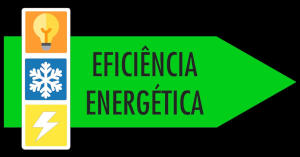
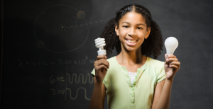
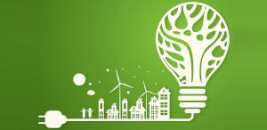

Vivemos em um mundo cada vez mais movido pela energia: acendemos luzes, carregamos celulares, usamos eletrodomésticos, máquinas, computadores... Mas você já parou pra pensar de onde vem toda essa energia? E mais: o que acontece quando a desperdiçamos? A eficiência energética é o uso consciente e inteligente da energia — ou seja, consumir apenas o necessário, sem desperdiçar, buscando alternativas mais sustentáveis e tecnológicas. Isso não significa viver no escuro ou abrir mão de conforto, mas sim mudar hábitos e atitudes. Ser eficiente energeticamente é cuidar do planeta, da nossa saúde financeira e das futuras gerações. E o mais interessante: todos nós temos um papel nesse processo — como estudantes, educadores, consumidores e cidadãos.
🧠 Tema transversal: quando a energia cruza a educação, a política e a cidadania
A eficiência energética não é um assunto isolado, técnico ou exclusivo de engenheiros. Ela está presente em várias áreas da nossa vida, por isso é considerada um tema transversal. Veja como ela se conecta a três grandes eixos:
📚 Na Educação:
Desde as séries iniciais até os cursos técnicos e superiores, a escola tem o poder de formar cidadãos críticos. Discutir eficiência energética nas aulas de Ciências, Geografia, Matemática e até Sociologia permite que os alunos compreendam os impactos do consumo descontrolado, conheçam novas fontes de energia limpa (como a solar e a eólica) e pensem soluções locais e globais. Educar para a energia é formar consciência.
📣 Na Política:
A eficiência energética também depende de leis, investimentos e incentivos públicos. Projetos como o "Luz para Todos", o uso de energia solar em prédios públicos e os programas de substituição de lâmpadas são exemplos de ações governamentais que estimulam o uso responsável da energia. Além disso, existem agências reguladoras, como a ANEEL, que fiscalizam o setor elétrico e garantem que os direitos dos consumidores sejam respeitados. A política energética justa é aquela que pensa no meio ambiente e nas populações mais vulneráveis
👫 Na Cidadania:
Como cidadãos, fazemos escolhas todos os dias. Ao comprar um aparelho com selo de economia, ao desligar a luz, ao cobrar nossos governantes por políticas sustentáveis, estamos exercendo um tipo de cidadania energética. Cada gesto importa. Somos parte da transformação ou da destruição — depende de como usamos o que temos.
💡 Dicas práticas: como começar a ser mais eficiente hoje mesmo?
Você pode começar agora mesmo a praticar a eficiência energética com atitudes simples. Veja algumas dicas que funcionam na escola, em casa e em qualquer lugar:
- ✅ Substitua lâmpadas incandescentes ou fluorescentes por lâmpadas LED, que gastam menos.
- ✅ Desligue aparelhos da tomada quando não estiver usando (sim, o “modo stand-by” consome energia!)
- ✅ Evite banhos demorados e prefira horários fora do pico de consumo (das 18h às 21h).
- ✅ Ao usar geladeira, evite abrir e fechar com frequência e nunca guarde alimentos quentes.
- ✅ Prefira usar a máquina de lavar com a capacidade cheia e agrupe roupas para passar tudo de uma vez.
- ✅ Aproveite ao máximo a luz natural durante o dia.
- ✅ Não use o ar-condicionado com portas/janelas abertas.
- ✅ Procure o selo Procel de economia ao comprar qualquer eletrodoméstico.
- ✅ Incentive sua escola e comunidade a adotarem práticas sustentáveis.
- ✅ Compartilhe esse conhecimento com sua família, amigos e vizinhos!
🔎 Curiosidades que talvez você não sabia:
⚠️ Uma lâmpada incandescente perde 90% da energia em forma de calor, e não de luz.
⚠️ Um carregador de celular plugado sem uso consome energia o tempo todo.
⚠️ A energia elétrica no Brasil ainda depende bastante de usinas hidrelétricas, que impactam o meio ambiente.
⚠️ Em média, 30% da energia nas casas brasileiras é desperdiçada por maus hábitos.